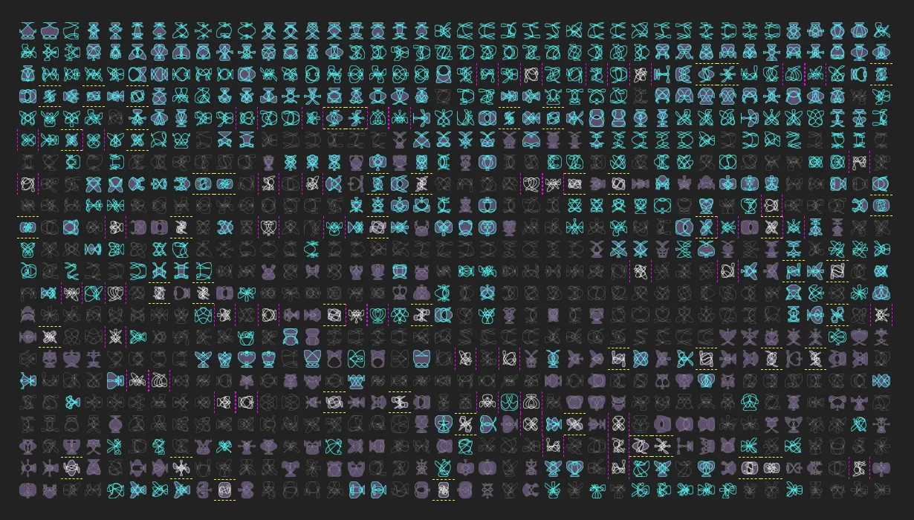

Responsive Images
Width Descriptor

Pixel Density Descriptor

VMIN & VMAX

Kitten responsive picture

https://developer.mozilla.org/en-US/docs/Web/API/HTMLImageElement/currentSrc
https://ericportis.com/posts/2014/srcset-sizes/
https://medium.com/@woutervanderzee/responsive-images-with-srcset-and-sizes-fc434845e948
http://udacity.github.io/responsive-images/examples/2-06/backgroundImageConditional/
http://udacity.github.io/responsive-images/examples/2-06/backgroundImageAlternative/
http://udacity.github.io/responsive-images/examples/2-06/imageSet
---------------------------------------------------